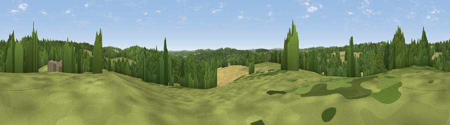

Viewpoint near Iden Green
#40381 in England · top 72% of its area beats it · near Iden GreenWhere it is
The exact computed spot (TQ 77875 32575). Click the marker for map links.
The view, rendered

A 360° render of this exact spot computed from the terrain model, tree cover and land cover — summer colours, afternoon light, calibrated against photographs of famous viewpoints. Real trees, hedges and buildings will differ in detail.
The panorama
Grey silhouette: terrain skyline in each direction (720 bearings, Earth curvature and refraction included). Dashed green: skyline with trees (+15 m) and buildings (+8 m) as obstacles. Blue strip: how far the ground is visible on each bearing.
Where the view opens
Wedge length = distance to the farthest visible ground on that bearing (vegetation-aware). Rings at 10, 25 and 50 km.
What fills the view
43% grassland · 42% woodland · 14% cropland ·
Angular shares of the visible panorama (visual magnitude), not map area. Landscape diversity 0.45 (0–1 Shannon).
Key numbers
More beautiful places nearby
The staircase of upgrades: each row has a higher view potential than everything closer. Driving times are estimates from straight-line distance, calibrated against real road routing — check an actual route before setting out.
| Place | Direction | Drive | Score |
|---|---|---|---|
| Viewpoint near Iden Green | ESE · 1 km | ~4 min | 38.2 |
| Viewpoint near Hartley | NW · 2 km | ~6 min | 50.1 |
| Blackbush Wood Hill | NW · 5 km | ~10 min | 53.5 |
| Silver Hill | SSW · 8 km | ~16 min | 54.9 |
| Viewpoint near Netherfield | SSW · 15 km | ~27 min | 64.5 |
| Brightling Obelisk [Brightling Down] | SW · 16 km | ~28 min | 69.1 |
| Viewpoint near Three Oaks | S · 21 km | ~35 min | 69.3 |
| Viewpoint near Guestling Green | SSE · 22 km | ~37 min | 72.2 |
51.06495, 0.53720 · source: screening · position refined by local search. Computed location — check access rights before visiting.